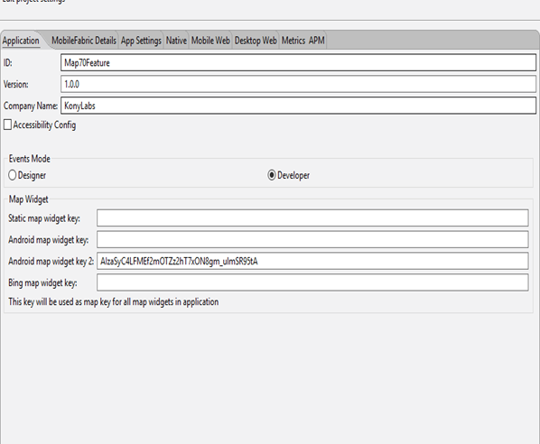

You are here: Flex Container Support
Map Widget
If you want to display certain geographical locations on a map as part of your application, you should use a Map widget. The Map widget uses native maps such as Google Maps to display the relevant points. Map widgets also have callouts and annotations such as pins and label to display the information related to each coordinate.
Here are some use cases in which you can use a Map widget, instead of calling the Maps app such as Google apps:
- To display the location of branches and ATMs of banks.
- To track the transit of a package delivery/flight.
- To provide the information to a Field Service agent as to where the service needs to be provided.
- To show a route to an outlet location, such as a restaurant or a gym.
You can also use Map widgets to overlay the map with various shapes such as circle, polyline, and polygon; encode or decode the maps; add pins to the map; and customize information that needs to be displayed for each pin (by using callout). In addition, you can use a Map widget to determine the distance between two geographical coordinates.
A Map widget provides you the capability to display pre-defined locations (latitude and longitude) on an onscreen map. Platforms like iPhone (above 3.0), and Android provide a native map widget that can be displayed as part of the application.
On platforms where a native map widget is not available, the Map widget integrates with Google Maps and displays the static image with zoom and pan controls. You can customize the map view if you do not want to use the default view.
Widgets are normally added to your application using Volt MX Iris, but can also be added from code. For general information on using widgets in Volt MX Iris, see Designing an Application in the Iris User Guide.
For general information on the Map widget see the Map topic in the Volt MX Iris User Guide.
For a more hands-on approach on the functions of Map widget and features provided by the Map API, import and preview the Map Feature sample app by using Volt MX Iris.

The Map widget capabilities can be broadly categorized into the following:
- Layout
- Animations
- Data Management
- Gestures
- 3D Touch
- UI Appearance
- Enabling RTL
- Miscellaneous
- Configurations Common To All Widgets
Layout
| Events | Description |
|---|---|
| doLayout | This event is invoked for every widget when the widget position and dimensions are computed. |
| Properties | Description |
|---|---|
| anchor | Specifies the anchor position of a map's pin image. |
| anchorPoint | Specifies the anchor position of a map's pin image. |
| bottom | Determines the bottom edge of the widget and is measured from the bottom bounds of the parent container. |
| calloutWidth | Specifies the width of the callout on the map. |
| containerHeight | Specifies the available height of the container in terms of percentage. |
| containerHeightReference | Enabled when you set the containerHeight. |
| centerX | Determines the center of a widget measured from the left bounds of the parent container. |
| centerY | Determines the center of a widget measured from the top bounds of the parent container. |
| height | Determines the height of the widget and measured along the y-axis. |
| left | Determines the lower left corner edge of the widget and is measured from the left bounds of the parent container. |
| mapWidth | Specifies the width of the map. |
| maxHeight | Specifies the maximum height of the widget and is applicable only when the height property is not specified. |
| maxWidth | Specifies the maximum width of the widget and is applicable only when the width property is not specified. |
| minHeight | Specifies the minimum height of the widget and is applicable only when the height property is not specified. |
| minWidth | Specifies the minimum width of the widget and is applicable only when the width property is not specified. |
| right | Determines the lower right corner of the widget and is measured from the right bounds of the parent container. |
| top | Determines the top edge of the widget and measured from the top bounds of the parent container. |
| width | Determines the width of the widget and is measured along the x-axis. |
| zIndex | Specifies the stack order of a widget. |
Animations
| Methods | Description |
|---|---|
| animate | Applies an animation to the widget. |
| Properties | Description |
|---|---|
| transform | Contains an animation transformation that can be used to animate the widget. |
Data Management
| Methods | Description |
|---|---|
| clone | When this method is used on a container widget, then all the widgets inside the container are cloned. |
| clear | Used to clear all the data associated with a map widget, including locationData and polylines. |
| dismissCallout | Used to dismiss the custom callout for a given location. |
| updatePin | Updates a single pin on the map. |
| updatePins | Updates several pins on the map. |
| Properties | Description |
|---|---|
| locationData | Helps you specify the data of the location highlighted on the Map Widget. |
| widgetDataMapForCallout | Specifies the mapping between the widget identifiers and data identifiers. |
3D Touch
| Methods | Description |
|---|---|
| registerForPeekandPop | Registers a widget to enable 3D Touch peek and pop gestures. |
| setOnPeek | Sets and overrides the existing onPeekCallback for the widget. |
| setOnPop | Overrides the existing onPopCallback for the widget. |
| unregisterForPeekandPop | Unregisters a widget from 3D Touch peek and pop gestures. |
User Input Handling
| Events | Description |
|---|---|
| onClick | An event callback is invoked by the platform when the user performs a click action on the map and location data with "latitude" and "longitude" are passed to the callback. |
| onPinClick | An event callback that is invoked by the platform when a map pin is clicked, passing the selected locationdata to the callback. |
| onScrollWidgetPosition | This event callback is invoked by the platform when the widget location position gets changed on scrolling. |
| onSelection | An event callback that is invoked by the platform when the user clicks on a callout of the Map. |
| Methods | Description |
|---|---|
| addGestureRecognizer | Allows you to set a gesture recognizer for a specified gesture for a specified widget. |
| removeGestureRecognizer | Allows you to remove the specified gesture recognizer for the specified widget. |
| setGestureRecognizer | Allows you to set a gesture recognizer for a specified gesture for a specified widget. |
| Properties | Description |
|---|---|
| autoCenterPinOnClick | Controls the placement of the pins of the Map widget to the center, when it is clicked. |
UI Appearance
| Properties | Description |
|---|---|
| calloutTemplate | Accepts a reference to a Box Widget which represents a UI template for a custom callout. |
| margin | Defines the space around a widget. |
| marginInPixel | Indicates if the margin is to be applied in pixels or in percentage. |
| mode | Specifies the view mode to view the map. |
| navControlsImageConfig | The images required to configure the zoom (in and out) and navigation ( left, right, top, and bottom) controls on the static map view. |
| retainMapPositionOnRestore | This flag indicates whether to retain mapPosition or bounds on map restore. |
| screenLevelWidget | Specifies whether the widget should occupy the whole container excluding space for headers and footers, if any. |
| showCurrentLocation | Indicates the current location on a map as a pin, circle, or none. |
| zoomLevel | Sets the zoom level for the current map view. |
| Methods | Description |
|---|---|
| addCircle | Used to add a circle to the map widget with the given location data. |
| addPin | Adds or appends a single pin to the map. |
| addPins | Adds or appends multiple pins to the map. |
| addPolygon | Used to add a polygon to the map widget with the given location data. |
| addPolyline | Used to add a polyline to the map widget with the given location data. |
| fitToBounds | Helps to fit the given locationdata on to the map. |
| getBounds | Returns the currently visible map boundaries as an object. |
| navigateTo | This helps to navigate from one index to other index in the given list of locations shown on the map view. |
| navigateToLocation | Allows you to navigate programmatically to the specified location. |
| removeCircle | Used to remove a Circle from the map. |
| removePolygon | Used to remove a polygon from the map. |
| removePin | Removes a single pin from the map. |
| removePins | Removes several pins from the map. |
| removePolyline | Used to remove a polyline from the map. |
| setBounds | Helps to fit the map to the provided center, zoom, viewingAngle, and orientation values at one go. |
| setCalloutVisibility | Can show or hide callouts. |
Enabling RTL
| Properties | Description |
|---|---|
| retainContentAlignment | Helps to retain the content alignment of the widget while applying RTL. |
| retainFlexPositionProperties | Helps to retain the left, right and padding properties while applying RTL. |
| retainFlowHorizontalAlignment | Enables you to change the horizontal flow of the widget from left to right. |
Miscellaneous
| Methods | Description |
|---|---|
| getBadge | Enables you to read the badge value (if any) attached to the specified widget. |
| setBadge | Enables you to set the badge value to the given widget at the upper, right corner of the widget. |
| Properties | Description |
|---|---|
| cursorType | Specifies the type of the mouse pointer used. |
| enableToolBar | Helps you to either enable or disable toolbar of a Map widget. |
| provider | Specifies the map data provider. |
| defaultPinImage | The default map pin image used to indicate a location on map. |
| imageSourceType | Specifies the source of the image for pins on the map. |
| Events | Description |
|---|---|
| onMapLoaded | This event is sent when the map rendering is complete. |
Configurations Common To All Widgets
| Methods | Description |
|---|---|
| convertPointFromWidget | Allows you to convert the coordinate system from a widget to a point (receiver's coordinate system). |
| convertPointToWidget | Allows you to convert the coordinate system from a point (receiver's coordinate system) to a widget. |
| enable | Allows you to make a widget visible but not actionable. |
| removeFromParent | Allows you to remove a child widget from a parent widget. |
| setEnabled | Specifies the widget that must be enabled or disabled. |
| setFocus | Specifies the widget on which there must be focus. |
| setVisibility | Use this method to set the visibility of the widget. |
| Properties | Description |
|---|---|
| enableCache | Enables you to improve the performance of Positional Dimension Animations. |
| parent | Helps you access the parent of the widget. |
| isVisible | The isVisible property controls the visibility of a widget on the form. |
Map Widget Basics
With the Map widget, your app can display a specific location, overlay it with circles, polygons, and polylines, and add highly customizable pins. With these capabilities, you app can, for instance, show the user a circular or rectangular area in which the app will search for certain types of businesses.
In addition, your app can search for possible routes between a source and a destination location and show them on the map by drawing a polyline.
Note: On Android platform, Map widget does not work in Popup.
Flex Container Support
When designing and developing your app, you can place a Map widget inside a flex container such as a FlexForm, a FlexContainer, or a FlexScrollContainer. You can also apply flex templates to Map widgets to aid in customizing their appearance. However, flex templates cannot be applied to Map widgets that are placed inside a box container such as an HBox or VBox. Flex templates can only be used on Map widgets that you have placed inside a flex container. In addition, you can use flex containers and flex templates for your pin callouts.
When used within a flex container, callouts behave in ways that are different from most widgets. For example, the Map widget does not use the flex container positional properties for callouts because it always displays callouts at the pin location. Because the Map widget itself is not derived from a flex container, the implicit calculations that normally occur with flex dimensional parameters are not performed with a Map widget's callouts. If the callout does not have an explicit width and height specified, the flex container default width and height are applied. When you apply callout templates to callounts in the Map widget, the Map widget ignores the calloutWidth property entirely.
Since a Flex container has the width and height properties, the calloutWidth property of a Map is ignored when using a Flex callout template.
Positional parameters of Flex containers are not respected since callouts are always displayed at the pin location rather than positions specified. Implicit calculations of flex dimensional values are not supported as its parent (the Map widget) is not a Flex container. If the widget does not have explicit width and height specified, Flex container default width and height are applicable.
Mapping Services
The Map widget renders a map using the mapping service provided by the platform. The following table shows the list of platforms and the available mapping services:
| Platform | Mapping Service |
|---|---|
| iOS | iOS Native Framework Map |
| Android | Google Maps |
| Windows | Bing Maps |
| Mobile Web (advanced) | Google Static Maps, Native maps of the device, and interactive maps (Java script) |
To generate and configure Android Google Map APIs click here.
Creating a Map Using a Constructor: voltmx.ui.Map
var mymap = new voltmx.ui.Map(basicConf, layoutConf, pspConf);
- basicConf is an object with basic properties.
- layoutConf is an object with layout properties.
- pspConf is an object with platform specific properties.
Note: The configuration properties should be passed only in the respective configuration objects otherwise they are ignored
Map Examples
Example 1: Creating a Map Dynamically
//The below function is the callback function for onPinClick event.
function onPinClickCallBck(map) {
alert("onPinClick event triggered");
}
//Defining the map properties
var mapBasicConf = {
id: "map1",
provider: constants.MAP_PROVIDER_GOOGLE,
mapKey: "0z5UtaSPUYj42f5qX0VAwmDGLX39Qxgbtcra0TA", //Provide your own Google map key.
defaultPinImage: "kmpin.png",
isVisible: true,
onPinClick: onPinClickCallBck
};
var mapLayoutConf = {
margin: [20, 40, 50, 20],
containerWeight: 100,
widgetAlignment: constants.WIDGET_ALIGN_BOTTOM_LEFT,
padding: [10, 10, 10, 10],
hExpand: false,
vExpand: false
};
var mapPSPConf = {
mode: constants.MAP_VIEW_MODE_HYBRID,
showCurrentLocation: constants.MAP_VIEW_SHOW_CURRENT_LOCATION_AS_PIN
};
//Creating the map with the properties defined above.
var map = new voltmx.ui.Map(mapBasicConf, mapLayoutConf, mapPSPConf);
Example 2: Using Flex Containers in Maps
var lbl1 = new voltmx.ui.Label({
"height": "26dp",
"id": "lbl1",
"left": "1dp",
"top": "85dp",
"width": "100dp",
"zIndex": 1….
}, {….
}, {….
});
flexTemp1 = new voltmx.ui.FlexContainer({
"bottom": "50dp",
"clipBounds": true,
"id": "flexTemp1",
"isVisible": true,
"layoutType": voltmx.flex.FREE_FORM,
"left": "0dp",
"Location": "[0,0]",
"right": "200dp",
"skin": "flexskin1",
"top": "0dp",
"zIndex": 1
}, {
"padding": [0, 0, 0, 0]
}, {});;
flexTemp1.add(lbl1);
mapWidget.calloutTemplate = flexTemp1;
frmMap1.map1.widgetDataMapForCallout = {
"lbl1": "lbl1"
};
frmMap1.map1.locationData = [{
lat: "17.377513",
lon: "78.475895",
name: "HCL",
desc: "Hyderabad,Telangana",
showCallout: true,
calloutData: {
lbl1: "HCL"
}
}]
Managing Map Pins
The following example shows how to add, delete and update map pins.
/******************************************************************
* Name : mapPins
* Author : HCL
* Purpose : To add pins corresponding to location data.
*******************************************************************/
function mapPins() {
frmMapNew.MainMap.locationData = [{
lat: "17.447326",
lon: "78.371358",
name: "HCL(new)",
desc: "Phoenix infocity, Gachibowli"
}, {
lat: "17.441839",
lon: "78.380928",
name: "HCL",
desc: "HCL",
image: "pin.png",
meta: {
color: "red",
label: "A"
}
}, {
lat: "17.450378",
lon: "78.388398",
name: "House",
desc: "Madhapur, Hyderabad, Andhra Pradesh",
image: "pin.png",
meta: {
color: "yellow",
label: "B"
}
}, ];
// frmMapNew.MainMap.addPin(pin1);
}
// Creating Pins
pin1 = {
id: "id1", // id is mandatory for every pin
lat: "17.4947934",
lon: "78.3996441",
name: "KPHB",
image: "defaultImage.png",
focusImage: ”focusImage.png ", //focus image will be shown while map pin selected
desc: "Kukatpally ",
showCallout : true,
meta: {
color: "green ",
label: "A "
}
};
pin2 = {
id : "id2 ", // id is mandatory for every pin
lat : "17.3616 ",
lon : "78.4747 ",
name : "Charminar ",
image : "defaultImage.png ",
focusImage:"focusImage.png", //focus image will be shown while map pin selected
desc: "In Hyderabad",
showCallout: true,
meta: {
color: "green",
label: "B"
}
};
pin3 = {
id: "id3", // id is mandatory for every pin
lat: "17.2543",
lon: "78.6808",
name: "Ramoji",
image: "defaultImage.png",
focusImage: ”focusImage.png ", //focus image will be shown while map pin selected
desc : "Film City in Hyderabad ",
showCallout : true,
meta: {
color: "green ",
label: "C "
}
};
/******************************************************************
* Name : addPin
* Author : HCL
* Purpose : To Dynamically add pin to the Map widget.
*******************************************************************/
function addPin ()
{
frmMapNew.MainMap.addPin(pin1);
}
/******************************************************************
* Name : addPins
* Author : HCL
* Purpose : To Dynamically add pins to the Map widget.
*******************************************************************/
function addPins()
{
frmMapNew.MainMap.addPins([pin2,pin3]);
}
/******************************************************************
* Name : deletePin
* Author : HCL
* Purpose : To Dynamically delete pin from the Map widget.
*******************************************************************/
function deletePin()
{
frmMapNew.MainMap.removePin(pin1);
}
/******************************************************************
* Name : deletePins
* Author : HCL
* Purpose : To Dynamically delete pins from the Map widget.
*******************************************************************/
function deletePins()
{
frmMapNew.MainMap.removePins([pin2,pin3]);
}
/******************************************************************
* Name : updatePin
* Author : HCL
* Purpose : To Dynamically update pin of a Map widget.
*******************************************************************/
function updatePin()
{
pinTemp = {
id : "id1 ", // id is mandatory for every pin
name : "Kukatpally Housing Board ",
};
frmMapNew.MainMap.updatePin(pinTemp);
frmMapNew.lblUpdate.text = "
updated the name of added pin ";
}
/******************************************************************
* Name : updatePins
* Author : HCL
* Purpose : To Dynamically update pins of a Map widget.
*******************************************************************/
function updatePins()
{
pinTemp = {
id : "id1 ", // id is mandatory for every pin
name : "Kukatpally Housing Board ",
};
pinTemp1 = {
id : "id2 ", // id is mandatory for every pin
name : "Four Minarets ",
};
frmMapNew.MainMap.updatePins([pinTemp,pinTemp1]);
frmMapNew.lblUpdate.text = "updated the names of Pins ";
}
Important Considerations
If there are multiple pins at the same location, click events will behave in the following way:
- iOS: Click events will be sent to the topmost pin and callout.
- Android: Click events will be sent to the bottommost pin and callout.
Note: Preview of map widget is not supported on SPA and Desktop Web platforms.
Android Limitations
On Android, if your app creates a Map widget V1 programmatically, follow either of the procedures below:
Procedure1:
- From the Applications View, right-click on the project and select Properties.
- Select Native App tab and select Android.
- Under Manifest Properties, select Tags tab.
- Add the below line of code in Child tag entries under
tag: .
<uses-library Android:name="com.google.Android.maps"></uses-library>
Procedure2: (works only with Volt MX Iris IDE plugin version IDE GA-V5.0.10 )
- From the Applications View, right-click on the project and select Properties.
- Under Application tab, add map key in Android map widget key textbox.
On Android if you want to use the Map widget V2, follow the below steps:
- From the Applications View, right-click on the project and select Properties.
-
Navigate to the Properties->Application tab. In the Map Widget section, add the key generated above in the Android map widget key 2 field.

Click here to read more about Generating and Configuring Map API Keys.
If you have downloaded Google Play Services v13 in Android SDK manager, follow either of the options below:
To support Android v2.2 and above devices, do the following:
- Download Google Play services for Froyo from the Android SDK manager. The Google Play services for Froyo will be available for download only after checking Obsolete option in Android SDK manager.
- Rename the folder "google_play_services_froyo" to "google_play_services", in the Android SDK path: ..\Android-sdk-windows\extras\google\.
To use the latest Google Play libraries (Rev 13 and above which support only Android v2.3 and above devices), do the following:
- In Volt MX Iris, On the Project menu, click Settings.
- Click the Native tab, and then click the Android sub-tab.
- Scroll down in the dialog box, and under Manifest Properties, click the Tags tab.
-
In the Child tag entries under
tag text box, add the following tag: .
Note: Google Map V2 does not work on emulator. On Android devices it works only with Android Version 2.2 and above. It requires OpenGL ES version 2 to load.
Note: On Android platform, Multiple Map Widgets in a single form is not supported for Google Map V1. It is supported for Google Map V2.
Note: Clickable/Interactive widgets inside a Map callout template will become non-clickable when Android Map V2 version is used. This the limitation of native Android Map V2 callout. As callouts are displayed as static image snapshot of callout template and only the entire callout is clickable. Map onSelection callback is invoked when a callout is clicked.
Customizing Map Pin Images
The Map widget provides you with the ability to set the map pin image from different possible sources. The map pin image takes the name of the pin image that is bundled with the application. This feature allows the developer to set the pin image from different sources. If the platforms fail to extract the image out of source, then default pin image is used. You can set the pin image from the following sources.
- A bundled image. If you have bundled an image with the app, you can set the pin image source to the name of the bundled image to display it.
- An image in the file system. Images in the file system of the device or app can be used for the pin image. You must provide the full path name to the image. Note that Android allows only PNG images.
- A Base64 String. You can provide an image that is stored in a base64 encoded format. Apps must decode the image from the base64 string to create a pin icon and set it as the pin image.
- An Image object. The Map widget lets you provide your bitmaps as Image widgets.
Note: Windows, Desktop Web, and SPA support only bundled images.
Searching Routes
Your app can search for routes between the source and destination locations using the voltmx.map.searchRoutes function, which is documented in the API Developer's Guide.